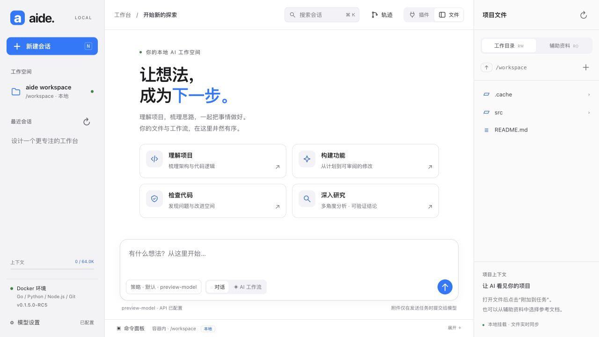

Connect the project you are working on
Browse files, edit content, and reference material across local directories and SSH/SFTP workspaces. Put tasks back in their real working environment.
Local files / Remote workspaces / Markdown previewConnect projects, models, tools, and execution.
From research to delivery, every step has evidence and every result can be reviewed.
Local & SSH projects · Your choice of models · MIT open source

Real project contextFiles, references, and tasks stay connected
Freedom to choose modelsConnect compatible local or cloud services
A reviewable processPlans, proposals, and execution leave a trail
Extensible for your domainConnect professional tools through source and plugins
01 / WORK WITH CONTEXT
From the first question to a reviewable outcome.
aide organizes context around your task,
so you can focus on analysis and judgment.
Map this project’s structure and key modules for me.
Understand the project before deciding what comes next.
Discuss the files in your workspace with architecture, code, and supporting material in the same context.
Prepare an implementation plan and change proposal for this feature.
Every step leaves a trail.
Review plans, tool records, and file proposals. Inspect changes before applying them; validation still depends on actual runtime output.
Use these materials to analyze the key issues in this proposal.
Bring in the context. Clarify the thinking.
Attach work files and supporting material to a task, compare and analyze the available content, then return to source files to verify key conclusions.
02 / MAKE IT YOURS
A workspace that grows with your professional practice.
Learn how to extend itBrowse files, edit content, and reference material across local directories and SSH/SFTP workspaces. Put tasks back in their real working environment.
Local files / Remote workspaces / Markdown previewConfigure services compatible with Chat Completions, then adapt model lists and parameter policies to different tasks.
Your providers / Model policies / Usage recordsPlans, tool calls, change proposals, and command output remain available for review. You retain judgment over changes and outcomes.
Plan → Propose → Review / File diffs / Execution trailUse supporting material, plugins, and source customization to connect your tools and workflows. Go, Python, Node.js, and Git are provided with the Docker environment.
Plugin tools / Read-only MCP tools / Source customization03 / GET STARTED
Releases require no compilation; source builds support customization.
From download to workspace, each step is clear and optional.
For users who want a fast deployment. Choose a release package for your platform and CPU architecture—no source environment required.
# Get aide
git clone https://github.com/skyelan1999/aide.git
cd aide
# Check the environment and install
bash scripts/install.sh --check
bash scripts/install.sh --sourceA FEW THINGS TO KNOW
This is the aide product website. The aide application runs on your computer and is accessed through a browser-based local workspace. It is designed for a trusted single user, not public multi-user hosting.
The aide source code uses the MIT License. You configure your own model services. Cloud models may charge under their provider’s terms; local models also require a suitable runtime environment.
You can configure services compatible with Chat Completions, including accessible local services. Compatibility depends on the service API and tool-call support. After saving the configuration, check the connection with a short question.
Project and conversation data is persisted on your machine. When using a cloud model, task content, context, and tool-read results are sent to your configured provider. Choose model services and accessible working directories according to your data requirements.
RESEARCH. DEVELOPMENT. PRODUCTIVITY.